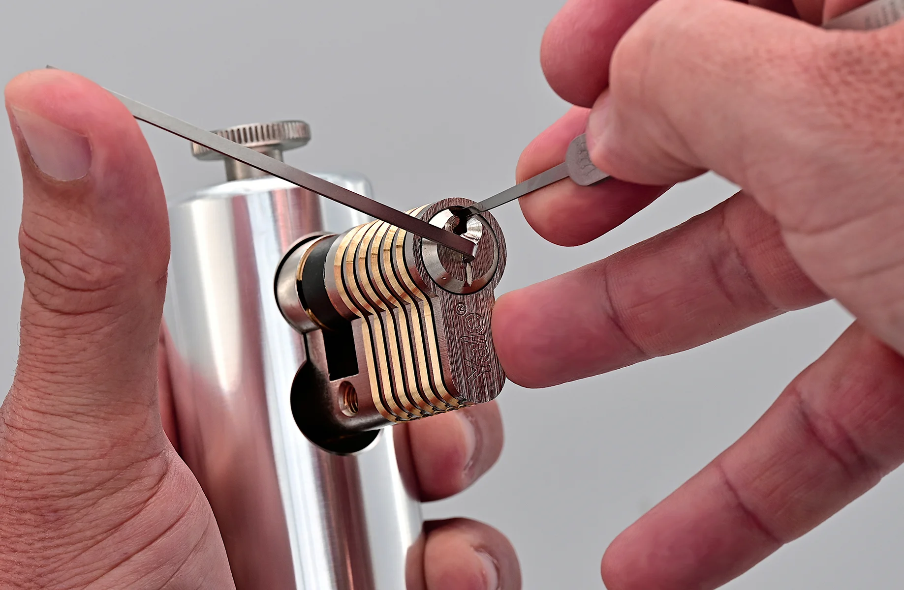

Vještina otvaranja cilindra za bravu
Otvaranje cilindara, bilo da je riječ o hitnim intervencijama bravara ili o hobiju poznatom kao lockpicking, predstavlja vještinu koja zahtijeva duboko razumijevanje unutrašnje mehanike brave. Tradicionalni cilindri funkcionišu pomoću niza malih klinova i opruga različitih dužina koji blokiraju rotaciju jezgra sve dok se ne ubaci odgovarajući ključ. Prilikom manipulacije bez ključa, koriste se specijalizovani alati – takozvani napinjači i pic-ovi – pomoću kojih se stvara blagi obrtni moment i pojedinačno podižu klinovi sve dok se svi ne poravnaju na liniji razdvajanja, što omogućava mehanizmu da se okrene i otključa vrata.
Sa stanovišta bezbjednosti, otvaranje cilindara je stalna trka između proizvođača brava i tehnika koje se koriste za njihovo zaobilaženje. Dok osnovni, jeftiniji modeli pružaju minimalan otpor i mogu se otvoriti za svega nekoliko desetina sekundi metodama poput češljanja ili udarnih ključeva (bump key), savremeni sigurnosni cilindri koriste napredne sisteme zaštite. Oni uključuju profilne klinove posebnih oblika (poput pečurkastih ili nazubljenih), magnetne elemente, elemente otporne na bušenje i lomljenje, čime se drastično produžava vrijeme potrebno za njihovo neovlašćeno otvaranje i pruža znatno viši nivo sigurnosti za imovinu.
Vebsajt sa relevantnom informacijom. Čitati dalje! Preuzeti početnički vodič o otvaranju cilindara.